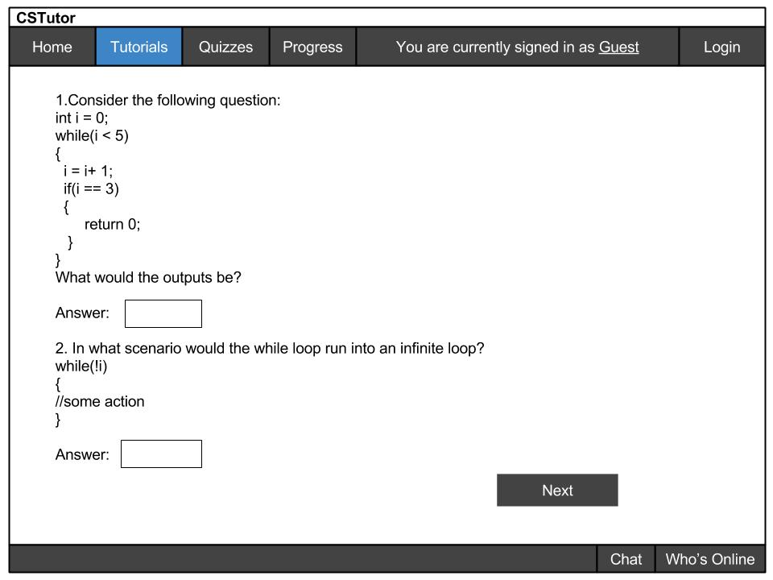

The CS Tutor is a tool that is made to help students understand topics better for their respective classes. This section particularly consists of sample quiz taken by the student and a sample quiz the professor can design.
An example of a CS Tutor quiz will look like this:

For this quiz, the student fills in the answer. The student can then click onto the next page and continues to finish the quiz.
Now, let's say if the student want to submit the quiz, it will look something like this:
For the teacher, the quiz will look a bit different because the teacher will be responsible for editing the quiz. A sample of a quiz edited by the instructor will look like this:
Let's say if the instructor wants to edit a quiz from another class, he/she can selector other class sections on the menu box right of the questions. Otherwise, once the quiz is done editing, the instructor can save it.